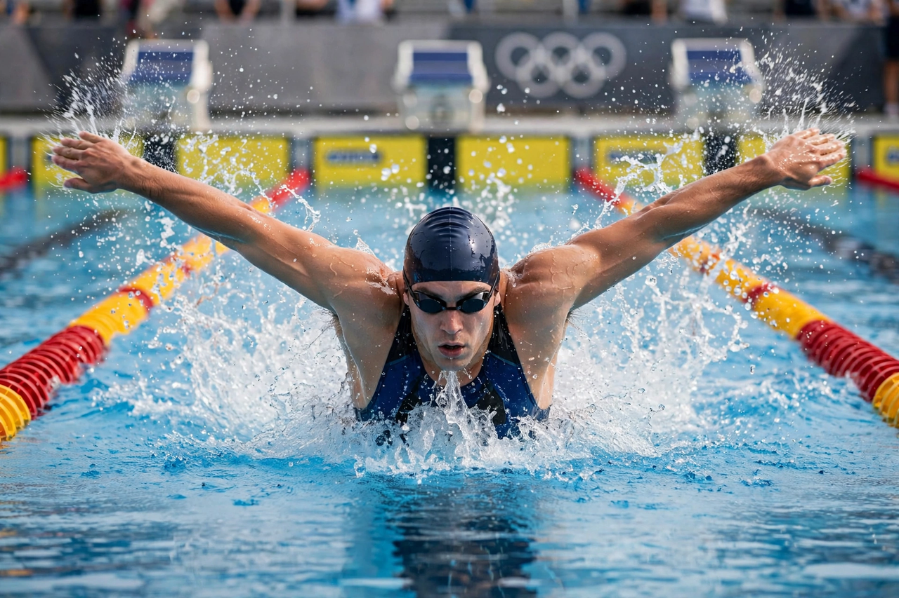

From Wikipedia, the free encyclopedia
| Michael Phelps | |
|---|---|
 Michael Phelps mid-butterfly stroke, water spraying from his arms, in an Olympic pool | |
| Born | 30 June 1985, Baltimore, Maryland, US |
| Height / weight | 6 ft 4 in (1.93 m); wingspan 6 ft 7 in |
| Sport | Swimming (butterfly, freestyle, medley) |
| Olympic medals | 28 total (23 gold) — most decorated Olympian of all time |
| World records | 39 set during career |
Michael Fred Phelps II (born 30 June 1985) is an American former competitive swimmer. He is the most successful and most decorated Olympian of all time, with a total of 28 medals — 23 of them gold — won across five Olympic Games between 2000 and 2016.
Phelps debuted at Sydney 2000 aged 15, won six golds at Athens 2004, and at Beijing 2008 won a record eight gold medals in a single Games, breaking Mark Spitz's mark of seven — including the famous fingertip victory by 0.01 seconds in the 100 m butterfly against Milorad Čavić, and a relay saved by Jason Lezak's anchor leg. After London 2012 he retired, then returned for Rio 2016 to win five more golds and a silver as US flag bearer and team captain. His once-in-a-century physique — long torso, huge wingspan, double-jointed ankles — and coach Bob Bowman's training regime made him the dominant swimmer of his era.
Since retiring in 2016, Phelps has become a prominent mental-health advocate, speaking openly about his depression and anxiety, and founded the Michael Phelps Foundation to promote water safety and healthy living.
Categories: 1985 births | Living people | American male swimmers | Most decorated Olympians